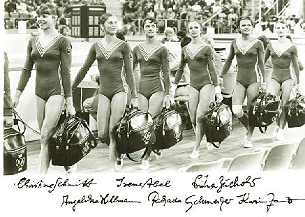

Richarda Schmeisser (GDR)
1972 Olympic Team Silver Medalist

(Richarda, 3rd from left, and her teammates at the 1972 Olympic Games)
Medal Total
Olympic Games: 1 Silver
World Championships: 2 Silver
Competition Results
1968
GDR Youth Spartakiade (Class II): 1st AA, 1st UB, 1st B, 1st FX
1969
GDR Championships: 5th AA
Jr. GDR-USSR Dual Meet: 6th AA
1970
World Championships: 2nd Team, 23rd AA
1972
Olympic Games: 2nd Team, 12th AA
1973
GDR-JPN Dual Meet: 1st Team, 1st AA
GDR-NOR Dual Meet: 1st Team, 1st AA
1974
Chunichi Cup: 3rd AA
GDR Championships: 3rd AA, 1st UB, 2nd B, 2nd FX
World Championships: 2nd Team, 9th AA, 5th UB
1975
Chunichi Cup: 7th AA
DTV Cup: 1st AA, 1st B, 2nd UB, 2nd FX
European Championships: 4th AA, 4th UB, 4th B, 5th FX
Leipzig International: 1st AA, 1st V, 1st FX
GDR Championships: 1st AA
GDR-JPN Dual Meet: 1st Team, 1st AA, 1st V, 1st FX, 2nd UB, 2nd B
USSR-GDR Dual Meet: 2nd AA
1976
GDR Championships: 2nd AA, 3rd FX
This page was created on September
03, 2005 and was last updated on November 21, 2020
© Gymn Forum